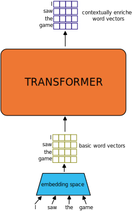
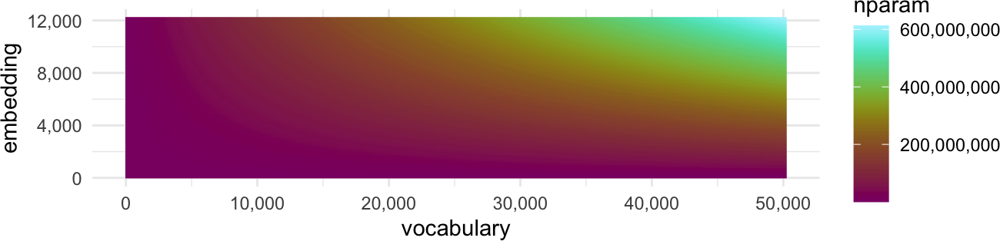

Transformers
Transformers are big models. If the material on the innards of the LSTM went by kind of quickly, we’ve got no hope to really address what’s happening in here.

Instead, we’ll walk through the ~big ideas~.
Entire Sequence Processing
The highest level idea to understand about transformers is that they take the entire sequences and produce “enriched” versions of those sequences as outputs, without processing them one by one.

In the illustration above, the thing to realize is that the simple word “saw” will have the same basic word vector regardless of which meaning of “saw” is being used in the sentence
noun - A tool for cutting things.
verb - To cut through something
noun - A saying or proverb
verb - past tense of “see”
Every one of these meanings will wind up with the same initial word vector. The same goes for “game”
noun - A competitive activity
verb - to play or gamble
noun - a hunted wild animal
adjective - willing to participate
etc.
What the transformer model tries to do is take these initial word vector representations and enrich them (“transform” them, if you will) so that the information in each word is adjusted with respect to all of the other words that appear in the sequence with it. So ideally, the enriched vector for “saw” in the illustration sentence would have a very different vector than it would in the sentence “I used the saw” by virtue of the fact that it appears immediately following “I” and with a noun phrase following.
Masking and Padding
“Masking” some input plays an important role in training some transformer models, but it also plays a crucial role in serving the input to the model. Because transformers modify word vectors based on their positional relationship to other word vectors in the input, they have to have a model of how to relate, say, the 60th word1 in an input to the 5th word in an input. And because it’s not doing this by processing each word one at a time, like an RNN or LSTM, it has to know ahead of time how many words are in the input.
The way this works in practice is that the model gets prespecified with a maximum length of input sequences, and when it gets fed an input sequence that’s shorter than input sequence, it gets padded out with a special [PAD] symbol that just gets ignored for the remaining transformations
0 1 2 3 4 5 6 7 ... 98 99 100
<s> I saw the game [PAD] [PAD] [PAD] ... [PAD] [PAD] [PAD]What this means practically is that there is a limit, albeit large one for most models, on how long the input sequence can be. For GPT3 this was 2,048 input tokens.
Vocabulary Size, Embedding Size, and Input Size
At this point, it’s worth sketching out how these three parameters can affect the size and complexity of a model, before you even begin stacking neural network layers on top of each other or increasing the size of your training data.
Vocabulary Size
If you want the transformer to be able to process any input text, even words that were absent in its training data, you’ll need to use some kind of fixed-vocabulary-size tokenization. For example, cast your mind back to Byte Pair Encoding. With BPE, you can pre-specify a vocabulary size, and hopefully be able to tokenize any input, even if it wasn’t in the training data. The question is, how large should set your vocabulary size?
Embedding Size
You also need to decide how long (and complex) you want your word vectors to be. In this class, we’ve looked at word vector sizes that are about 100 values long.
Now, in order to translate your input vocabulary of \(v\) length into a word vector of \(w\) length, you’ll need a matrix that is \(v\times w\) in size, which means every increase in size of either the vocabulary size or the length of the word vectors you want will dramatically increase the total number of parameters that need to get learned in the embedding space.

Internal processing
So, our input to the transfomer is a matrix of \(x\) input tokens, each of which is a vector \(w\) items long, a.k.a a \(x\times w\) matrix. If we had just a single linear layer mapping the input matrix to an output matrix of the same size, we’d need a matrix \(w\times w\) large. This follows for every process inside of a transformer that produces a \(x\times w\) sized matrix, which is another place where increases in the size of the embedding space can dramatically increase the number of parameters involved.
Positional Encoding
There be dragons
Footnotes
token↩︎